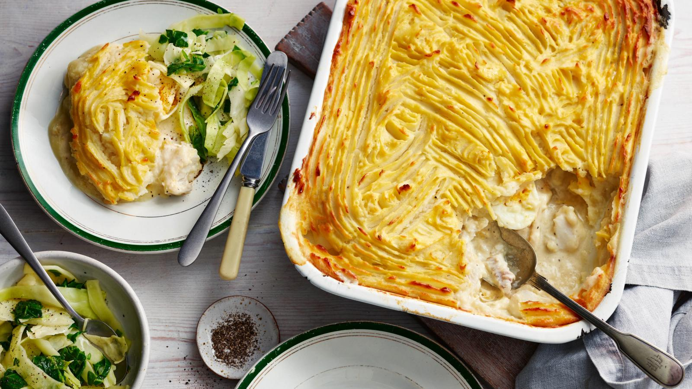

Mary Berry's easy fish pie

A delicious and easy-to-make recipe for all family.
Mary Berry´s mother Marjorie cooked this simple fish pie every year on Christmas Eve. Mary still does it today
with happy memories of childhood. Make it up to 36 hours ahead before cooking and keep in the fridge.
Ingredients:
- 75g butter, plus extra for greasing
- 1 large onion, roughly chopped
- 50g plain flour
- 570ml/1 pint milk
- salt and freshly ground black pepper
- 2 tbsp lemon juice
- 350g fresh haddock, cut into 1cm pieces
- 350g undyed smoked haddock, cut into 1cm pieces
- 4 hard-boiled free-range eggs, roughly chopped
For the topping
- 900g potatoes, peeled and cut into even-sized pieces
- about 8 tbsp hot milk
- about 50g butter
Steps:
- Preheat the oven 200C/400F/Gas 6. Grease a shallow 2.5 litre/4½pint dish with butter.
- Melt the butter in a pan on a high heat and fry onion for few minutes. Lower the heat, cover and
leave to soften for 15 minutes.
- Remove the lid and increase the heat to remove any moisture. Sprinkle in the flour and then add the
milk gradually, stirring well and allowing the sauce to thicken until all the milk has been added.
- Season with salt and freshly ground black pepper, add lemon juice and the raw fish and cook for couple of
minutes, stirring continuously until the fish has just cooked. Stir in the smoked haddock. Pour the mixture
into the buttered dish and leave to cool. Top with the hard-boiled eggs.
- For the topping, boil the potatoes in a pan of salted water until tender. Drain, tip the potatoes back into the pan,
add milk and butter and mash until lump-free. Use a ricer to get smooth mash. Add salt and freshly ground black pepper to taste.
- Spread the mash over the top of the sauce and fish in the dish and score with a fork.
- Bake in the preheated oven for about 30 minutes, or until the potato is crisp and golden-brown.